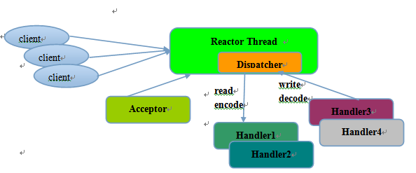
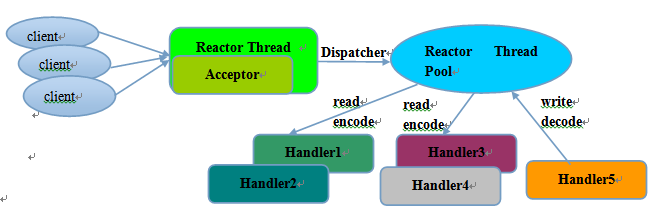
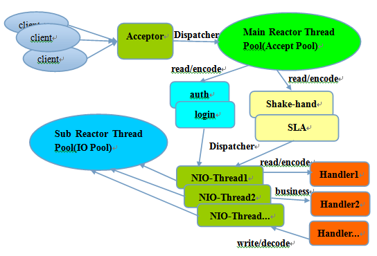
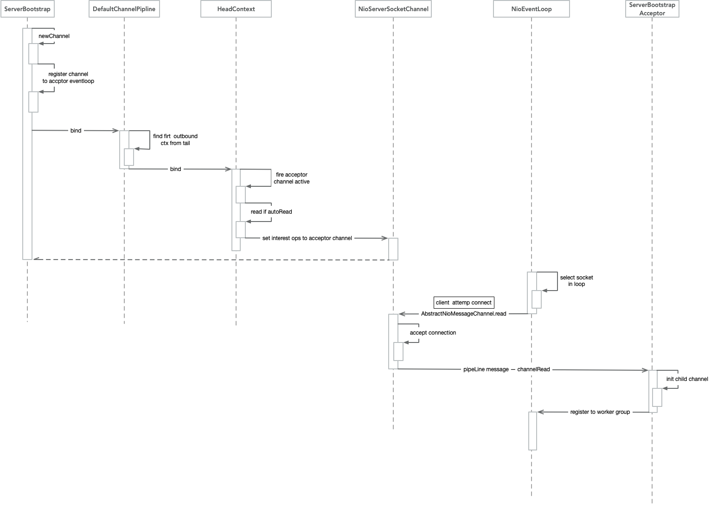

Netty
Netty 是一个 异步 事件驱动 的网络应用框架，用于快速开发高性能、可扩展协议的服务器和客户端
Reactor
无论是 C++ 还是 Java 编写的网络框架，大多数都是基于 Reactor 模式进行设计和开发，Reactor 模式基于事件驱动，特别适合处理海量的 I/O 事件。
反应器设计模式-维基百科 – 反应器设计模式(Reactor pattern)是一种为处理服务请求并发 提交到一个或者多个服务处理程序的事件设计模式。当请求抵达后，服务处理程序使用解多路分配策略，然后同步地派发这些请求至相关的请求处理程序。
单线程模型
Reactor 单线程模型，指的是所有的 IO 操作都在同一个 NIO 线程上面完成，NIO 线程的职责如下：
- 作为 NIO 服务端，接收客户端的 TCP 连接；
- 作为 NIO 客户端，向服务端发起 TCP 连接；
- 读取通信对端的请求或者应答消息；
- 向通信对端发送消息请求或者应答消息。

由于 Reactor 模式使用的是异步非阻塞 IO，所有的 IO 操作都不会导致阻塞，理论上一个线程可以独立处理所有 IO 相关的操作。从架构层面看，一个 NIO 线程确实可以完成其承担的职责。例如，通过 Acceptor 类接收客户端的 TCP 连接请求消息，链路建立成功之后，通过 Dispatch 将对应的 ByteBuffer 派发到指定的 Handler 上进行消息解码。用户线程可以通过消息编码通过 NIO 线程将消息发送给客户端。
对于一些小容量应用场景，可以使用单线程模型。但是 对于高负载、大并发的应用场景却不合适。
多线程模型
Rector 多线程模型与单线程模型最大的区别就是有一组 NIO 线程处理 IO 操作，它的原理图如下：

Reactor 多线程模型的特点：
- 有专门一个
NIO线程Acceptor线程用于监听服务端，接收客户端的TCP连接请求； - 网络
IO操作 - 读、写等由一个NIO线程池负责，线程池可以采用标准的JDK线程池实现，它包含一个任务队列和N个可用的线程，由这些NIO线程负责消息的读取、解码、编码和发送； - 1 个
NIO线程可以同时处理 N 条链路，但是 1 个链路只对应 1 个NIO线程，防止发生并发操作问题。
主从多线程模型
主从 Reactor 线程模型的特点是：服务端用于接收客户端连接的不再是个 1 个单独的 NIO 线程，而是一个独立的 NIO 线程池。 Acceptor 接收到客户端 TCP 连接请求处理完成后（可能包含接入认证等），将新创建的 SocketChannel 注册到 IO 线程池（sub reactor 线程池）的某个 IO 线程上，由它负责 SocketChannel 的读写和编解码工作。 Acceptor 线程池仅仅只用于客户端的登陆、握手和安全认证，一旦链路建立成功，就将链路注册到后端 subReactor 线程池的 IO 线程上，由 IO 线程负责后续的 IO 操作。

它的工作流程总结如下：
- 从主线程池中随机选择一个
Reactor线程作为Acceptor线程，用于绑定监听端口，接收客户端连接； - Acceptor 线程接收客户端连接请求之后创建新的
SocketChannel，将其注册到主线程池的其它 Reactor 线程上，由其负责接入认证、IP 黑白名单过滤、握手等操作； - 步骤 2 完成之后，业务层的链路正式建立，将
SocketChannel从主线程池的Reactor线程的多路复用器上摘除，重新注册到Sub线程池的线程上，用于处理 I/O 的读写操作。
Netty 的优势
- 多路复用，并在 NIO 的基础上进行更高层次的抽象
- 事件机制
- 功能强大，预置了多种编解码功能，支持多种主流协议
- 定制能力强，可以通过ChannelHandler对通信框架进行灵活的扩展
Netty 为什么性能好？
- 纯异步：
Reactor线程模型 - IO 多路复用
- GC 优化：更少的分配内存、池化（Pooling）、复用、选择性的使用
sun.misc.Unsafe - 更多的硬件相关优化（mechanical sympathy）
- 内存泄漏检测
- “Zero Copy”
Zero Copy
Netty 的 Zero-copy 体现在如下几个个方面:
Netty提供了CompositeByteBuf类, 它可以将多个ByteBuf合并为一个逻辑上的ByteBuf, 避免了各个ByteBuf之间的拷贝.- 通过
wrap操作, 我们可以将byte[]数组、ByteBuf、ByteBuffer等包装成一个Netty ByteBuf对象, 进而避免了拷贝操作. ByteBuf支持slice操作, 因此可以将ByteBuf分解为多个共享同一个存储区域的ByteBuf, 避免了内存的拷贝.- 通过
FileRegion包装的FileChannel.tranferTo实现文件传输, 可以直接将文件缓冲区的数据发送到目标Channel, 避免了传统通过循环write方式导致的内存拷贝问题.
垃圾回收
Netty 里 HeapByteBuffer 底下的 byte[] 能够依赖JVM GC自然回收；而 DirectByteBuffer 底下是 Java 堆外内存，除了等JVM GC，最好也能主动进行回收；所以，Netty ByteBuf需要在 JVM 的 GC 机制之外，有自己的引用计数器和回收过程。
原生的 JVM GC 很难回收掉 DirectByteBuffer 所占用的 Native Memory
Netty 中采用引用计数对 DirectByteBuffer 进行对象可达性检测，当 DirectByteBuffer 上的引用计数为 0 时将对象释放。
@Override
public boolean release() {
for (;;) {
int refCnt = this.refCnt;
if (refCnt == 0) {
throw new IllegalReferenceCountException(0, -1);
}
if (refCntUpdater.compareAndSet(this, refCnt, refCnt - 1)) {
if (refCnt == 1) {
deallocate();
return true;
}
return false;
}
}
}Netty 内存泄漏，主要是针对池化的 ByteBuf 。 ByteBuf 对象被 JVM GC 掉之前，没有调用 release() 把底下的 DirectByteBuffer 或byte[] 归还，会导致池越来越大。而非池化的 ByteBuf ，即使像 DirectByteBuf 那样可能会用到 System.gc() ，但终归会被 release 掉的，不会出大事。因此 Netty 默认会从分配的 ByteBuf 里抽样出大约 1% 的来进行跟踪。
源码
ByteBuf
- ByteBuf 扩容采用先倍增后步进的方式
DirectBuffer vs HeapBuffer
在执行网络IO或者文件IO时，如果是使用 DirectBuffer 就会少一次内存拷贝。如果是非 DirectBuffer ，JDK 会先创建一个 DirectBuffer ，再去执行真正的写操作。这是因为，当我们把一个地址通过 JNI 传递给底层的C库的时候，有一个基本的要求，就是这个地址上的内容不能失效。然而，在 GC 管理下的对象是会在 Java 堆中移动的。也就是说，有可能我把一个地址传给底层的 write ，但是这段内存却因为 GC 整理内存而失效了。所以我必须要把待发送的数据放到一个 GC 管不着的地方。这就是调用 native 方法之前，数据一定要在堆外内存的原因。
Netty 启动以及链接建立过程

Epoll 触发
有两种模式，一是水平触发（LT），二是边缘触发（ET）。
在LT模式下，只要某个fd还有数据没读完，那么下次轮询还会被选出。而在ET模式下，只有fd状态发生改变后，该fd才会被再次选出。ET模式的特殊性，使在ET模式下的一次轮询必须处理完本次轮询出的fd的所有数据，否则该fd将不会在下次轮询中被选出。
NioChannel：是水平触发EpollChannel：是边缘触发，Netty 为保证数据完整会在特定条件下自己触发 Epoll Event，来读取数据
JDK NIO BUG
- 正常情况下，
selector.select()操作是阻塞的，只有被监听的fd有读写操作时，才被唤醒 - 但是，在这个
bug中，没有任何fd有读写请求，但是select()操作依旧被唤醒 - 很显然，这种情况下，
selectedKeys()返回的是个空数组 - 然后按照逻辑执行到
while(true)处，循环执行，导致死循环。
Netty 解决方案：
long currentTimeNanos = System.nanoTime();
for (;;) {
// 1.定时任务截止事时间快到了，中断本次轮询
//...
// 2.轮询过程中发现有任务加入，中断本次轮询
//...
// 3.阻塞式select操作
selector.select(timeoutMillis);
// 4.解决jdk的nio bug
long time = System.nanoTime();
if (time - TimeUnit.MILLISECONDS.toNanos(timeoutMillis) >= currentTimeNanos) {
selectCnt = 1;
} else if (SELECTOR_AUTO_REBUILD_THRESHOLD > 0 &&
selectCnt >= SELECTOR_AUTO_REBUILD_THRESHOLD) {
rebuildSelector();
selector = this.selector;
selector.selectNow();
selectCnt = 1;
break;
}
currentTimeNanos = time;
//...
}netty 会在每次进行 selector.select(timeoutMillis) 之前记录一下开始时间 currentTimeNanos ，在 select 之后记录一下结束时间，判断 select 操作是否至少持续了 timeoutMillis 秒。如果持续的时间大于等于 timeoutMillis ，说明就是一次有效的轮询，重置 selectCnt 标志，否则，表明该阻塞方法并没有阻塞这么长时间，可能触发了 jdk 的空轮询 bug ，当空轮询的次数超过一个阀值的时候，默认是 512 ，就开始重建 selector